Intro
In the previous articles you have learned how to prepare the data for the analysis, how to train a model and how to make predictions using SDMtune. In this article you will learn how to evaluate your model using three different metrics.
SDMtune implements three evaluation metrics:
- AUC: Area Under the ROC curve (Fielding and Bell 1997)
- TSS: True Skill Statistic (Allouche, Tsoar, and Kadmon 2006)
- AICc: Akaike Information Criterion corrected for small sample size (Warren and Seifert 2011)
We will compute the value of the metrics on the training dataset,
using the default model that we trained in a previous
article.
AUC
As usually we first load the SDMtune package:
library(SDMtune)
#>
#> _____ ____ __ ___ __
#> / ___/ / __ \ / |/ // /_ __ __ ____ ___
#> \__ \ / / / // /|_/ // __// / / // __ \ / _ \
#> ___/ // /_/ // / / // /_ / /_/ // / / // __/
#> /____//_____//_/ /_/ \__/ \__,_//_/ /_/ \___/ version 1.3.0
#>
#> To cite this package in publications type: citation("SDMtune").The AUC can be calculated using the function auc():
auc(default_model)
#> [1] 0.8728322We can also plot the ROC curve using the function
plotROC():
plotROC(default_model)
#> Warning: The following aesthetics were dropped during statistical transformation: m, d
#> ℹ This can happen when ggplot fails to infer the correct grouping structure in
#> the data.
#> ℹ Did you forget to specify a `group` aesthetic or to convert a numerical
#> variable into a factor?
AICc
For the AICc we use the function aicc(). In this case we
need to pass to the env argument the ‘predictors’ raster
object that we created in the first
article:
aicc(default_model,
env = predictors)
#> [1] 6618.725Conclusion
In this article you have learned:
- how to calculate the AUC;
- how to plot the ROC curve;
- how to calculate the TSS;
- how to calculate the AICc.
In the next article you will learn two different strategies that can be used to correctly evaluate the model performance.